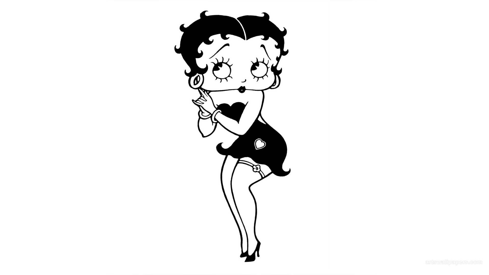

Betty Boop nasceu nos anos 1930, criada pelo animador Max Fleischer e se tornou um ícone da cultura pop desde sua primeira aparição em 1930, no desenho "Dizzy Dishes". Com seu estilo inconfundível, cabelo ondulado e um olhar encantador, Betty rapidamente conquistou o coração do público, tornando-se a primeira "femme fatale" dos desenhos animados.
Ela é conhecida por seu charme irresistível e pela liberdade de expressão, sendo uma das primeiras personagens femininas a quebrar barreiras na mídia. Ao longo dos anos, Betty Boop passou por várias transformações, mas sempre manteve sua essência, permanecendo uma representação do empoderamento e da diversão.
Durante a década de 1930, ela foi estrela de inúmeros filmes e desenhos, muitas vezes desafiando convenções sociais com seu jeito atrevido, mas sempre com um toque de inocência que a tornou única. Seu visual foi inspirado no estilo flapper, representando uma época de mudanças sociais e culturais nos Estados Unidos.
Hoje, Betty Boop é muito mais que uma personagem de animação: ela é um ícone da moda, da música e da cultura pop. Sua imagem aparece em roupas, acessórios, colecionáveis e até mesmo em campanhas publicitárias, mantendo-se uma figura atemporal.
🎀Ela não é apenas uma estrela do passado, mas um símbolo de charme, rebeldia e elegância que continua a encantar gerações.🎀
